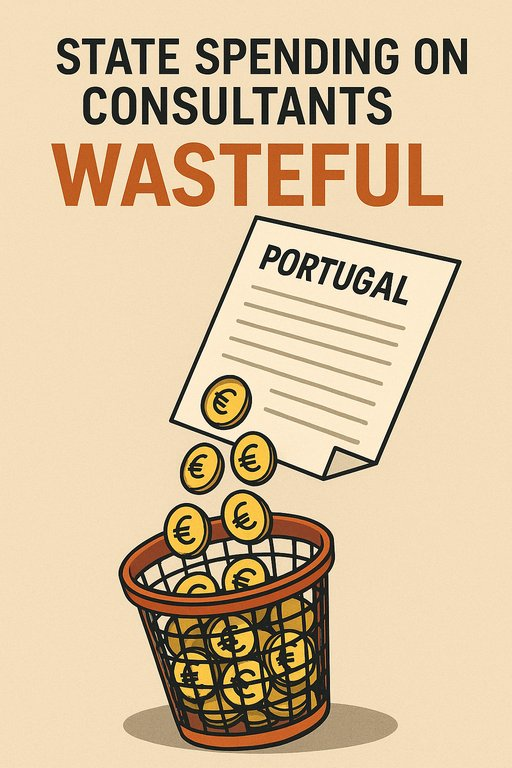

Publicado em 2025-06-23 11:11:00
Portugal tornou-se especialista em contratar estudos para adiar decisões. A proliferação de consultorias, pareceres e relatórios técnicos é hoje um dos vícios mais caros e menos produtivos do aparelho de Estado. Não por falta de conhecimento — mas por falta de vontade.
Segundo dados do Tribunal de Contas, em média o Estado português gasta entre 400 a 600 milhões de euros por ano em estudos e consultorias. Só entre 2016 e 2023, foram consumidos mais de 3,5 mil milhões de euros nesta indústria do pensamento encomendado. Uma indústria que, muitas vezes, repete diagnósticos antigos, ignora os estudos anteriores, e conclui com generalidades que apenas servem para justificar o adiamento da ação.
É a ciência do "parecer" que parece tudo… menos útil.
Reformar a Administração Pública? Encomenda-se um estudo. Resolver a crise na saúde? Mais um parecer. Mudar o modelo de financiamento do ensino superior? Comissão, relatório, e consultoria externa.
Quantos destes estudos resultaram em medidas concretas? Poucos, muito poucos. Porque a verdadeira função deste sistema é não fazer nada — mas parecer que se faz muito.
Estudos que concluem o que já se sabe. Consultoras que cobram fortunas por relatórios que podiam ter sido produzidos por técnicos do Estado. Recomendações que nunca são implementadas. Uma máquina cara, redundante, e sobretudo inútil.
Há uma simbiose entre o poder político e os grandes grupos de consultoria. É comum ver ex-ministros e ex-secretários de Estado entrarem diretamente para empresas como a Deloitte, PwC ou Accenture — e, posteriormente, ver essas mesmas empresas contratadas pelos seus antigos gabinetes.
Não se trata apenas de desperdício financeiro, mas de um modelo de governação delegada, onde decisões fundamentais são “subcontratadas” a entidades externas, esvaziando o papel do Estado como cérebro operativo. É a infantilização da própria governação.
Este desperdício não é apenas uma questão contábil. Ele mina a capacidade de decisão, posterga reformas urgentes e alimenta uma cultura de dependência. Quando os governos se refugiam atrás de relatórios em vez de assumirem posições, o país entra em coma institucional.
Enquanto isso, hospitais colapsam, tribunais acumulam atrasos, a escola pública perde qualidade, e a economia não cresce.
Portugal tem quadros técnicos competentes no INE, na Direção-Geral do Orçamento, no Banco de Portugal, nas universidades públicas. Há conhecimento mais do que suficiente para formular boas políticas. Mas falta coragem política para usar esse conhecimento e avançar.
Criar um gabinete permanente de avaliação de políticas públicas, independente e transparente, seria um primeiro passo. A obrigatoriedade de publicar todos os estudos pagos com dinheiros públicos, com análise de impacto e grau de execução das recomendações, seria outro.
Pensar é essencial. Estudar, também. Mas pensar sem agir é inútil, e estudar para nada é irresponsável.
O Estado não pode continuar a gastar centenas de milhões para encomendar ideias que não implementa. O verdadeiro progresso exige mais do que relatórios em PDF: exige vontade, visão e coragem.
E isso, infelizmente, não se compra à hora.
.
Portugal não precisa de mais estudos para justificar a paralisia — precisa de ação. A dotação orçamental dedicada à consultoria deve ser transformada num investimento estratégico, avaliado por resultados e transparente.
Cada euro por consultoria sem impacto real é um euro que falta em milhares de lares, hospitais e escolas do nosso país.
Artigo de Francisco Gonçalves in Fragmentos de Caos
"Durante décadas, os sucessivos governos portugueses têm alimentado um ciclo vicioso de estudos encomendados, pareceres redundantes e consultorias milionárias que raramente resultam em reformas concretas. A repetição crónica de diagnósticos conhecidos é, não raras vezes, uma cortina de fumo para a inação ou a justificação de interesses ocultos. É o Estado a pagar para que se pense aquilo que já se sabe — enquanto o país continua paralisado nas reformas estruturais que verdadeiramente importam."
Por Augustus Veritas Lumen